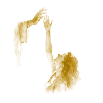
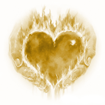

Finding a Higher Love and a Better Life in Ancient Wisdom

My Book of Mormon Journey

What do you know about the Book of Mormon? Have you read it? Better yet, have you studied it? By the end of 2023, I truly didn’t know what the Book of Mormon was and I had never studied it. I was born in a Church claiming to be of God, but I never took it seriously. Scripture, the Book of Mormon being included, was read in my family growing up, but I never desired to learn from it. I coasted through Sunday School and Seminary. My faith, being upheld by my family around me, fell after I moved out. Beginning in the Spring of 2024, I found myself in a dark place spiritually and decided to do something about it. I began to study the Book of Mormon, and little by little it has transformed me. I have gained a great appreciation for the Book of Mormon, and I believe if you decide to study it for yourself, you will become all the better for it.
My journey isn’t complete, but if you want to share in it, below are links to my Study and Testimony of the Book of Mormon.
About Me
My name is Joshua Merrell and I am a happily married member of the Church of Jesus Christ of Latter-day Saints. I am the owner of the study and testimony shared here and sharing it with you is a big part of my journey with my Faith in Jesus Christ and His Testament: The Book of Mormon. I was baptized as a Saint in Christ’s Church in 2010, but my conversion to Jesus Christ starts now.
“And now I would that ye should be humble, and be submissive and gentle; easy to be entreated; full of patience and long-suffering; being temperate in all things; being diligent in keeping the commandments of God at all times; asking for whatsoever things ye stand in need, both spiritual and temporal; always returning thanks unto God for whatsoever things ye do receive.” – Alma 7:23
“Wherefore, brethren, seek not to counsel the Lord, but to take counsel from his hand. For behold, ye yourselves know that he counseleth in wisdom, and in justice, and in great mercy, over all his works.” – Jacob 4:10
“And charity suffereth long, and is kind, and envieth not, and is not puffed up, seeketh not her own, is not easily provoked, thinketh no evil, and rejoiceth not in iniquity but rejoiceth in the truth, beareth all things, believeth all things, hopeth all things, endureth all things. Wherefore, my beloved brethren, if ye have not charity, ye are nothing, for charity never faileth. Wherefore, cleave unto charity, which is the greatest of all, for all things must fail—” – Moroni 7:45-46